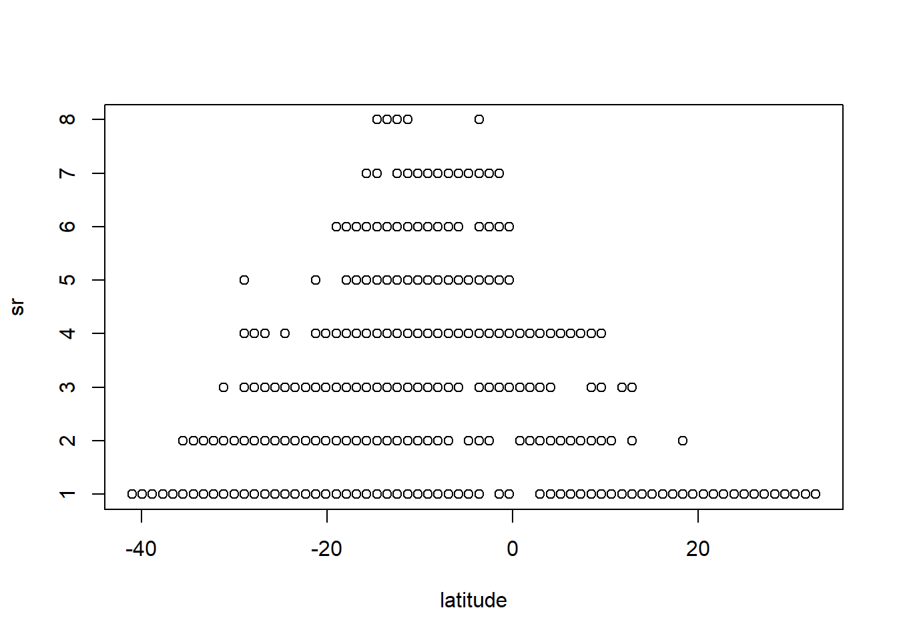
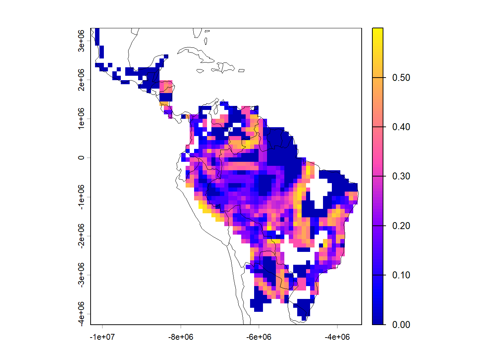
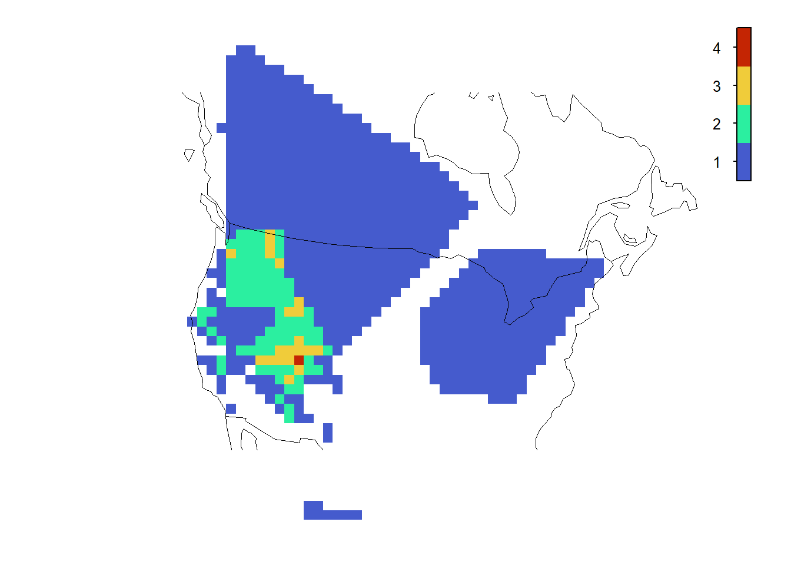
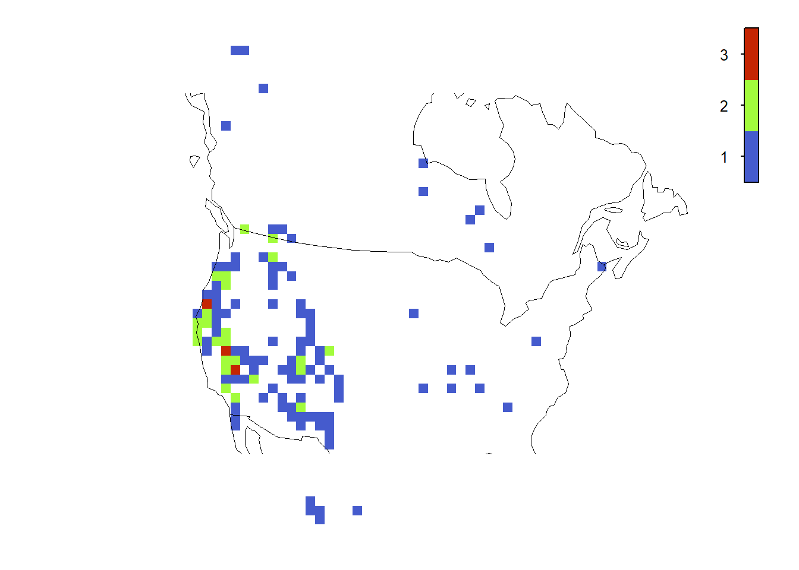

Este tutorial tem como objetivo a criação de mapas de biodiversidade usando (i) mapas de distribuição de espécies (range maps) ou (ii) coordenadas de pontos como entrada.
34.1 Carregar pacotes
library(epm)
Warning: pacote 'epm' foi compilado no R versão 4.6.1
library(sf)
Linking to GEOS 3.14.1, GDAL 3.12.1, PROJ 9.7.1; sf_use_s2() is TRUE
library(tmap)
Warning: pacote 'tmap' foi compilado no R versão 4.6.1
library(terra)
terra 1.9.27
library(raster)
Warning: pacote 'raster' foi compilado no R versão 4.6.1
Carregando pacotes exigidos: sp
Warning: pacote 'sp' foi compilado no R versão 4.6.1
spp.list <-vector('list', length(spp.names)) # lista com o mesmo tamanho de 'spp.names'names(spp.list) <- spp.namesfor (i in1:length(spp.names)) { ind <-which(phyllomedusinae$sci_name == spp.names[i]) # cada espécie em polígonos separados spp.list[[i]] <- phyllomedusinae[ind,]}
34.2.3 Testar cada polígono para problemas de geometria
for (i in1:length(spp.list)) {if (!any(st_is_valid(spp.list[[i]]))) {message('\t reparando polígono ', i) spp.list[[i]] <-st_make_valid(spp.list[[i]]) }}
34.2.4 Alterar projeção (do mapa)
A definição de uma projeção de mapa é feita por um CRS (Coordinate Reference System - Sistema de Referência de Coordenadas). Diferentes CRSs definem como coordenadas geográficas aparecerão em um mapa 2D. Você pode facilmente encontrar códigos para diferentes CRSs na internet. A escolha de um CRS depende da área geográfica em que você está trabalhando, além das suas preferências pessoais. Geralmente, mapas que preservam a área são preferidos. Vamos usar a projeção Mollweide, que representa as áreas com mais precisão do que projeções de mapa padrão.
EAprojmol <-'+proj=moll +lon_0=0 +x_0=0 +y_0=0 +ellps=WGS84 +datum=WGS84 +units=m no_defs'# projeção de área igual# Aplicar a projeção a cada mapa de distribuiçãoEAspp <-lapply(spp.list, function(x) st_transform(x, st_crs(EAprojmol))) # projeção de área igual para todos
Substitua os espaços em branco por sublinhados (underscores) nos nomes das espécies.
names(EAspp) <-gsub('\\s+', '_', names(EAspp))
34.2.5 Criar a grade geográfica (grid)
Você pode fazer diversas escolhas ao criar um mapa de grade. As mais importantes são: 1. A resolução, que depende da natureza dos seus dados e da extensão geográfica da sua área. Quanto mais brutos os dados e maior a extensão geográfica, maior deve ser a resolução. Note que uma resolução pequena e não justificada (células pequenas) apenas aumenta (inflaciona) desnecessariamente os graus de liberdade de modelos futuros. 2. Quanto da célula deve ser coberta pela distribuição para que a espécie seja considerada presente nela.
Summary of epm object:
metric: spRichness
grid type: square
number of grid cells: 4347
grid resolution: 110000 by 110000
projected: TRUE
crs: +proj=moll +lon_0=0 +x_0=0 +y_0=0 +datum=WGS84 +units=m +no_defs
number of unique species: 66 (richness range: 1 - 8)
data present: No
phylogeny present: No
34.2.7 Gerar matriz de ocorrência ( = matriz de presença/ausência)
Isso é fundamental em análises macroecológicas em nível de assembleia. Extrair a matriz de ocorrência mais as coordenadas geográficas de cada célula lhe dá liberdade para trabalhar com qualquer pacote e fazer análises personalizadas.
occurrence.spp <-generateOccurrenceMatrix(grid.spp, sites ="all")# A função retorna todos os sites, incluindo os desocupadossite.sums <-rowSums(occurrence.spp)occurrence.spp <- occurrence.spp[site.sums >0, ]dim(occurrence.spp)
[1] 1133 66
Salvar matriz de ocorrência
write.table(occurrence.spp, file ="dadosbiogeo/occurrence.spp.txt") # salva a tabela
34.2.8 Recuperar coordenadas geográficas - centróide de cada célula
Quer ver a evidência para um gradiente latitudinal de diversidade?
# Primeiro, vamos colocar a latitude de volta em graus decimais corretos (está em metros Mollweide)division_factor <-100000# Correçãolatitude <- coords[,2] / division_factor# Plotar riqueza de espécies vs latitudeplot(latitude, sr)

34.2.11 Mapeando o turnover (diversidade beta)
Agora, vamos voltar ao epm e calcular a diversidade beta como turnover.
turnover <-betadiv_taxonomic(grid.spp,radius =160000, # 160.000 metros = 160 kmcomponent="turnover")
Warning in spdep::dnearneigh(gridCentroids, d1 = 0, d2 = radius): neighbour
object has 5 sub-graphs
gridcell neighborhoods: median 8, range 1 - 8 cells
As 8 células vizinhas da célula focal; com resolução de célula de 110km.
Mapear turnover de espécies.
# cor amigávelterra::plot(turnover, col = sf::sf.colors(100))# Mapear um shapefile de contornoworldmapEA <-st_transform(epm:::worldmap, attributes(grid.spp)$crs)plot(worldmapEA, lwd =0.5, add=TRUE)

34.3 (ii) Criando mapas usando coordenadas de pontos de espécies
Você pode usar o código da primeira parte do exercício para obter a matriz de ocorrência, coords e todo o resto.
34.3.4 Criar polígonos a partir de pontos
Alternativamente, você pode desejar usar as coordenadas de pontos para criar polígonos geográficos para cada espécie. Primeiro, transforme as coordenadas em uma lista com as espécies como elementos contendo as coordenadas (X, Y) para cada espécie.
spcoords <-split(points[, c("X", "Y")], points$taxon)# Iterar a transformação para todosxys <-vector(mode ="list", length(spcoords))polys <-vector(mode ="list", length(spcoords))for (i in1:length(spcoords)){ xys[[i]] =st_as_sf(spcoords[[i]], coords=c("X","Y")) polys[[i]] = xys[[i]] |> dplyr::summarise() |>st_cast("POLYGON") polys[[i]] = polys[[i]] |>st_convex_hull()}# Recuperar os nomesspecies_names <-names(spcoords)names(polys) <- species_names
34.3.5 Criar a grade usando polígonos
# Atribuir CRS para cada polígono sfpolys <-lapply(polys, function(p) {st_set_crs(p, AEA)})# Criar a gradegrid_spp2 <-createEPMgrid(polys,resolution =100000,cellType ='square',crs =st_crs(AEA))
5 small-ranged species were preserved:
Tamias_alpinus
Tamias_obscurus
Tamias_ochrogenys
Tamias_palmeri
Tamias_quadrimaculatus
Mapear a grade criada com polígonos.
plot(grid_spp2)

Comparar com o mapa de coordenadas de pontos.
plot(grid_spp)

34.4 Desafio 1
Usando seus próprios dados, crie uma grade geográfica e mapeie a riqueza e turnover. Se você não tem seus próprios dados, use os dados de roedores Sigmodontinae na pasta do curso.